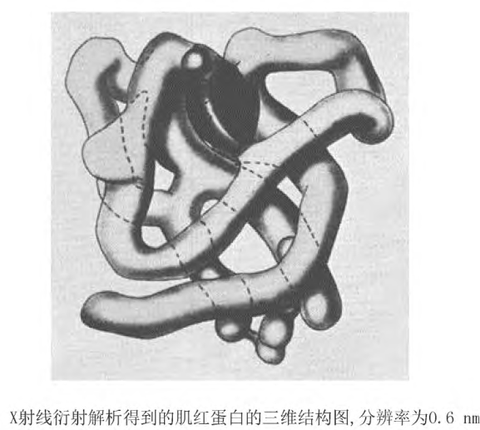
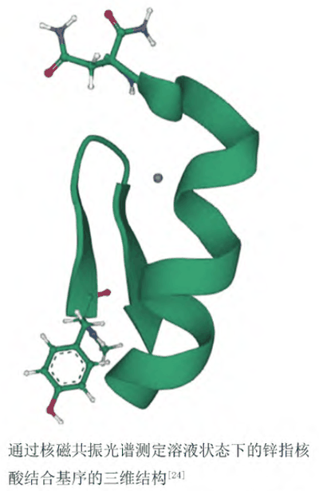
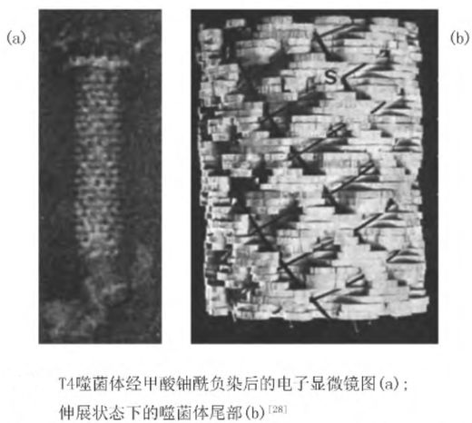

1.1蛋白质结构的意义与解析的困难
蛋白质的功能由其三维结构决定：酶依靠精确的活性口袋完成催化，抗体通过可变区识别抗原表位，激素与受体的结合同样依赖特定的空间构象[1,6]。因此，酶制剂、激素、疫苗、抗体与血浆蛋白制品的活性与稳定性，本质上都由结构信息决定。
然而结构解析并不容易：层级叠加、结构域组合、共价修饰、样品制备与环境依赖，五类因素共同造成“通量瓶颈”——一种蛋白从基因到结构，往往需要数月乃至数年的周期[3]。
1.2三类实验方法
原理：X 射线照射蛋白质晶体时与晶格中的电子发生散射，衍射斑点的强度与相位共同决定电子密度，进而解出原子坐标[1]。
进展：1958 年 Perutz 与 Kendrew 以多对同晶置换法（MIR）解决相位问题，首次得到肌红蛋白与血红蛋白的高分辨率结构，并获 1962 年诺贝尔化学奖[1,2]。
局限：须生长高质量晶体；强辐射易损伤晶体；难以结晶的蛋白无法解析。但其分辨率可达原子级，至今仍是 PDB 结构的主要来源。

原理：强磁场中的原子核（¹H、¹³C、¹⁵N）在射频激发下发生能级跃迁，共振频率随化学环境而变；由化学位移、标量耦合与 NOE 可推得距离与二面角约束[1]。
进展：Wüthrich 于 1977 年将二维 NMR 用于生物大分子，1985 年报道首个 NMR 蛋白质结构，获 2002 年诺贝尔化学奖。
优点与局限：溶液态、可刻画构象动态；但适用分子量有限，谱峰重叠严重。它给出的不是单一构象，而是构象系综——这正是多数预测模型难以表达的。

原理：样品毫秒级速冻包埋于玻璃态冰中保持近天然构象，低剂量电子成像后对大量颗粒投影做三维重构[1]。
进展：1968 年重建噬菌体尾部结构，1975 年解析视紫红质蛋白，2017 年获诺贝尔化学奖；2019 年 52 kDa 链霉亲和素达 0.32 nm。
局限：样品与设备门槛高、数据量巨大；小分子量与低均一性样品仍困难。电镜密度图的低分辨率区域，恰可由预测模型填补。

1.3三类方法的比较
| 方法 | 适用对象 | 主要优势 | 主要限制 |
|---|---|---|---|
| X 射线晶体衍射 | 可结晶的蛋白质与复合物 | 分辨率最高，PDB 结构的主要来源 | 依赖高质量晶体；辐射损伤；大分子困难 |
| 核磁共振（NMR） | 分子量较小的可溶蛋白 | 溶液态无损检测，可刻画构象动态 | 谱峰重叠；适用分子量有限 |
| 冷冻电镜（Cryo-EM） | 大分子复合物、膜蛋白 | 无需结晶，近生理状态 | 样品与设备门槛高；数据处理复杂 |
三类方法各有适用范围，实践中常配合使用；但它们共享同一个瓶颈——必须先获得足量、均一的样品，这使得结构解析难以跟上基因组测序所揭示的序列数量[1,3,5]。